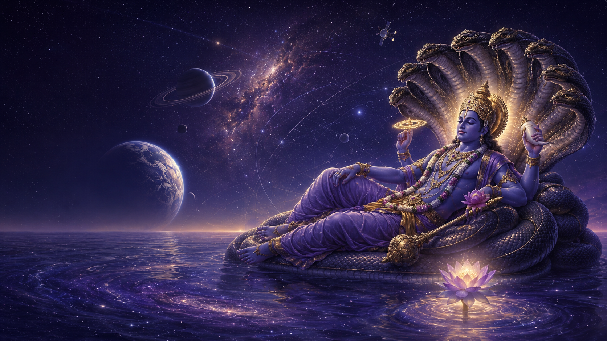

Space Science & Astronomy
Explore celestial systems, planetary science, observational astronomy and the technologies enabling humanity’s journey beyond Earth.

Where Ancient Wisdom Inspires Scientific Exploration
We explore the universe through astronomy, space science, Indic cosmology and the enduring human search for meaning—combining reverence for ancient wisdom with the discipline of scientific inquiry.
For thousands of years, humanity has looked toward the cosmos with wonder. Sacred traditions asked profound questions about creation, time, consciousness and infinity. Modern science explores these questions through observation, mathematics, experimentation and evidence.
Ishavasyam.org creates a respectful space where these perspectives can be studied together—without confusing spiritual belief with established scientific fact.
ॐ तस्मै श्री गुरवे नमः
With reverence to the Guru—the guiding light who dispels darkness, awakens knowledge and inspires the search for truth.
May every exploration of the universe begin with humility, wisdom and clarity.
ईशावास्यमिदं सर्वं यत्किञ्च जगत्यां जगत्।
तेन त्यक्तेन भुञ्जीथा मा गृधः कस्यस्विद्धनम्॥
— Isha Upanishad, Mantra 1
“Ishavasyam” may be understood as “all existence is pervaded or enveloped by the Divine.” The verse teaches that everything within this changing universe is interconnected and sacred. It invites us to live with restraint and gratitude, accepting what is entrusted to us without coveting what belongs to another.
This vision inspires Ishavasyam.org to approach the universe with humility—to observe it with wonder, investigate it with scientific discipline and treat creation with responsibility.
Explore celestial systems, planetary science, observational astronomy and the technologies enabling humanity’s journey beyond Earth.
Study classical Indian perspectives on creation, cosmic time, recurring cycles and the structure of existence within their historical and philosophical contexts.
Encourage interdisciplinary inquiry into consciousness, perception and humanity’s place in the universe while clearly distinguishing philosophy from experimentally validated science.
Create accessible learning opportunities that bring students, researchers, scientists and traditional scholars into thoughtful dialogue.
Ancient wisdom can inspire important questions. Scientific methods help us investigate which ideas can be observed, measured, tested and reproduced.
01 — Question
Examine profound ideas about the universe, life, time and consciousness.
02 — Investigate
Apply research, observation, mathematics, critical thinking and interdisciplinary study.
03 — Share
Communicate findings transparently, acknowledge uncertainty and invite constructive review.
Ishavasyam.org does not present spiritual narratives as scientific proof. We approach sacred knowledge with respect and scientific claims with evidence.
Join a thoughtful exploration of space, consciousness and ancient cosmological ideas through curiosity, collaboration and scientific discipline.
Connect With Ishavasyam.orgWrite to the Ishavasyam.org team